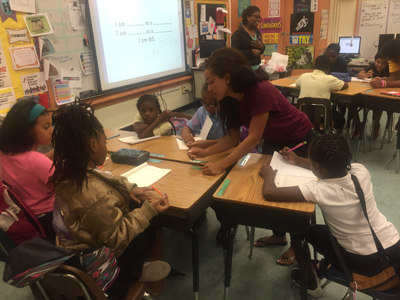

About Us
Our Mission
Written in My Soul is an official service organization at the University of Miami designed to teach youth how to use poetry as a form of healthy self-expression.
How We Were Founded
Our founder, Breana Ross, is a senior at the University of Miami studying Broadcast Journalism and Political Science. Ross has always had a passion for serving the community, especially children and those who come from lowsocioeconomic backgrounds.
While working as a camp counselor at a summer camp for homeless and needy children, Ross noticed that many of the children had trouble expressing their feelings surrounding their circumstance in a healthy way. Many of them were angry about their situations and channeled that aggression in unhealthy ways that often resulted in disciplinary action. Ross had always loved writing poetry and used it in a therapeutic way. She felt that the kids she worked with could benefit from using poetry to express their feelings.
She worked with Earlington Heights Elementary School in Miami to pilot the program in 2016 as the University of Miami's Inaugural Social Innovation Grant recipient. Written in My Soul became an official student organization at the University of Miami in 2017.
Our Method
Written in My Soul runs in cycles. A cycle consists of 4 weekly writing workshops with a designated partner covering various writing techniques, performance skills, and writing workshops. At the end of the 4 weekly workshops, Written in My Soul hosts a poetry slam with food, performances, and fellowship where students can share their work.